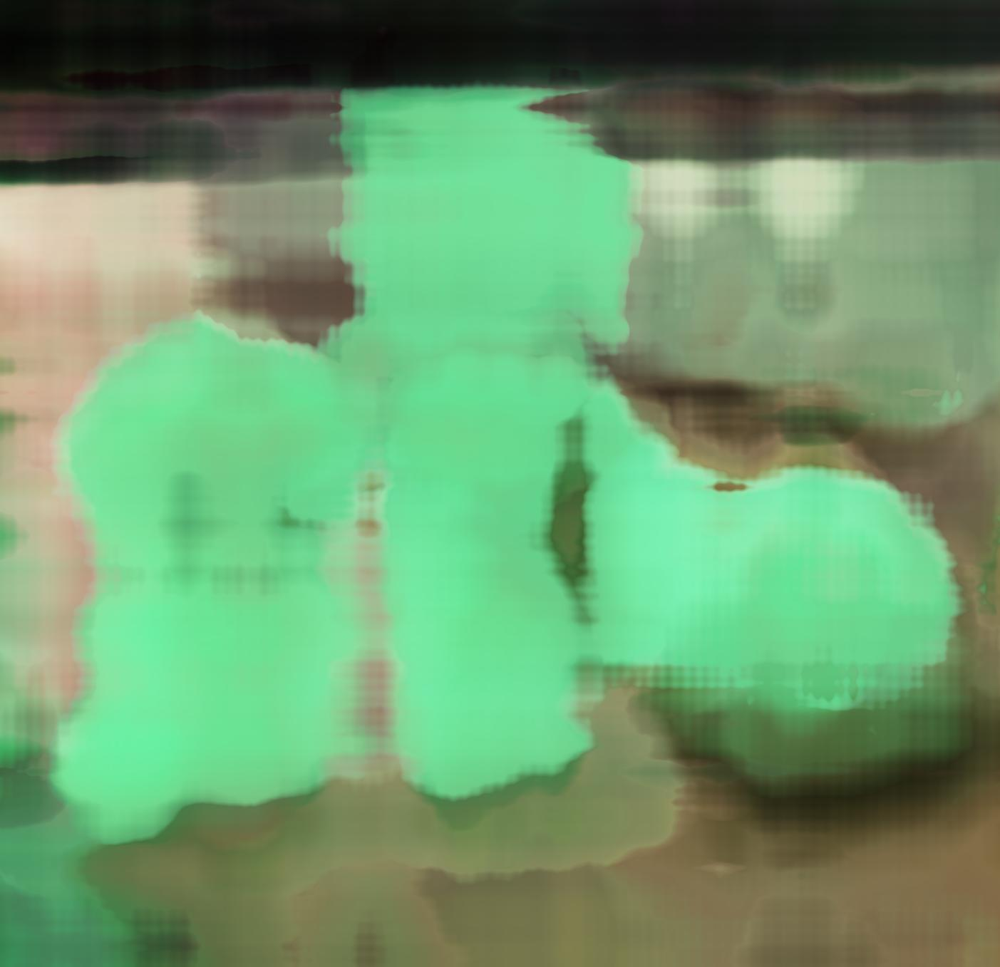

Project 4: Neural Radiance Field!
Part 0: Calibrating Your Camera and Capturing a 3D Scan
I followed the instructions in part 0 to generate my dataset of a smiski! As forewarned, the checking of detection of tags caused some issues. Since I had multiple functions I had to do checking in multiple places to make sure that tags were detected, as well as keeping track of which images had valid extrinsics matrices. I had a bug where I was adding both c2w and w2c, so the visualizations looked very odd (two clumps of frustums). After figuring this out, I then visualized the results!
Part 1: Fit a Neural Field to a 2D Image
I follow the model architecture shown in this part! It took me some time to figure out how finagle the image coordinates to be from 0 to 1. Additionally, I read in images with cv2 with is BGR then saved with skimage which is RGB so I needed to make changes–the image appeared really blue at first! Throughout this process, I learned how to structure and construct a neural network with code on top of the more theoretical foundation I’ve gotten through 189.
Fox!

3000 iters

original
Jazz show in New Orleans!
This one performs worse than the provided fox image as it has a lot more granular detail (more changes between color and lighting in smaller areas)

3000 iters
my 3 glowing smiskis

100 iters

1000 iters

original

psnr curve for smiski training
I tested Max positional encoding frequency of 2 and 10, and width of 12 and 256.
These were all trained with 3000 iterations and the parameters stated above.

MPEF: 2, width: 12-> super blobby, no definition

MPEF: 2, width: 256 -> get general shape but no definition

MPEF: 10, width: 12 -> get more granular definition
MPEF: 10, width: 256 -> granular definition + shape